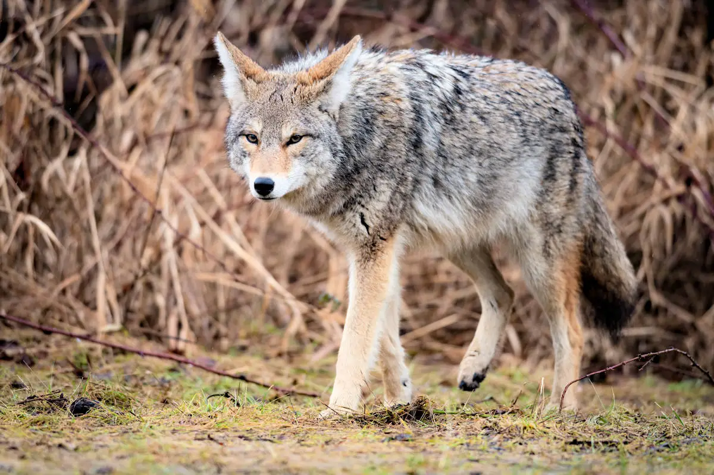
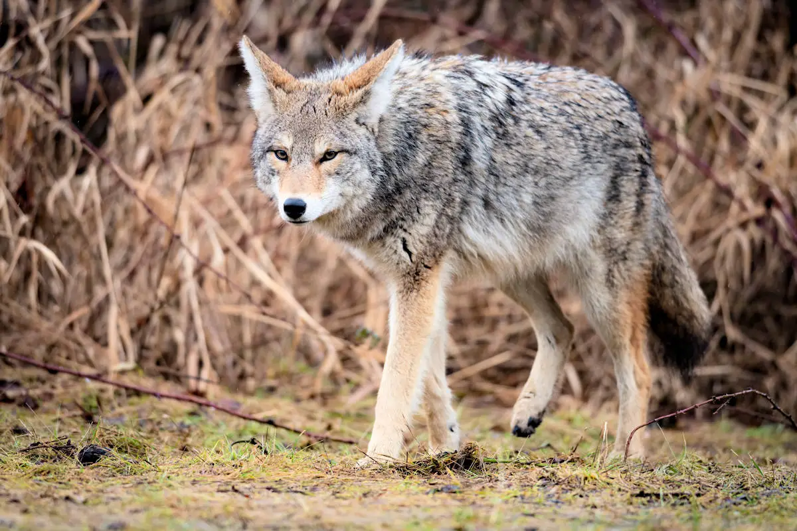

El entorno natural que rodea a esta presa es verde y diversa, esta se caracteriza por una diversa presencia de arboles en la que se encuentran:
los mezquites, el palo verde ,
el huizache, el encino y el pirul.
Aqui mismo se encuentran otras especies vegetales tales como:
el arbusto chaparro, el arbusto jerilla, arbusto creosota,entre otras.

 
